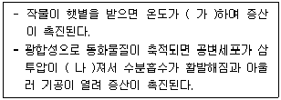
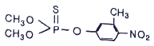
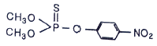
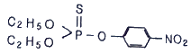
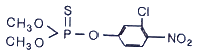

식물보호기사 (2021-03-07 기출문제)
1과목: 식물병리학
1. 박테리오파지의 기주특이성을 이용하여 진단할 수 있는 병으로 가장 적절한 것은?
- 밀 속깜부기병
- 벼 줄무늬잎마름병
- 보리 겉깜부기병
- 벼 흰잎마름병
(정답률: 59%)

2. 과수의 자주날개무늬병균은 분류학적을 어느 균류에 속하는가?
- 난균
- 담자균
- 자낭균
- 접합균
(정답률: 78%)
3. 호박의 흰가루병을 방제하기 위해서는 어느 부위에 약제를 처리하는 것이 가장 효과적인가?
- 뿌리
- 잎과 줄기
- 토양
- 종자
(정답률: 85%)
4. 식물병원체가 생산하는 기주 특이적 독소는?
- Victorin
- Tentexin
- Pohiobolins
- Fumaric acid
(정답률: 75%)
5. 인공 배지에서 배양이 가능한 식물 병원체는?
- 선충
- 바이러스
- 세균
- 파이토플라스마
(정답률: 85%)
6. 다음 중 기생성 종자식물이 수목에 미치는 주요 피해로 가장 거리가 먼 것은?
- 국부적 이상 비대
- 기주로부터 양분과 수분 탈취
- 저장물질의 변화 및 생장 둔화
- 태양광선의 차단에 의한 생장 불량
(정답률: 71%)
7. 시설재배에서 발생하는 토양 병해의 방제방법으로 가장 거리가 먼 것은?
- 습도 조절
- 태양열 소독
- 훈증제 사용
- 경엽처리제 사용
(정답률: 69%)
8. 토마토 풋마름병에 대한 설명으로 옳은 것은?
- 토마토에만 감염된다.
- 담자균에 의한 병이다.
- 병원균은 주로 병든 식물체에서 월동한다.
- 병원균이 뿌리로 침입하면 뿌리가 흰색으로 변한다.
(정답률: 68%)
9. 국내에 발생하는 채소류의 균핵병에 대한 설명으로 옳지 않은 것은?
- 잎, 줄기, 열매 등에 발생한다.
- 자낭포자나 균핵에서 발아한 균사로 침입한다.
- 발병 후기에는 발병 조직에 백색 균사가 나타난다.
- 균핵이 땅 속에 묻혀 있다가 25℃ 이상의 고온이 되면 발아한다.
(정답률: 70%)
10. 종묘 소독에 대한 설명으로 옳은 것은?
- 농약만을 사용하는 방법이다.
- 종자의 발아율을 좋게 하는 방법이다.
- 종자의 이물질이 없도록 정선하는 방법이다.
- 종자와 종묘 이외도 덩이뿌리 등 영양번식체를 소독하는 방법이다.
(정답률: 79%)
11. 병원균의 분생포자각과 자낭각이 보이는 식물병은?
- 오이 잘록병
- 옥수수 오갈병
- 벼 이삭누룩병
- 밤나무 줄기마름병
(정답률: 66%)
12. Aspergillus flavus가 생산하는 균독소는?
- Aflatoxin
- Citrinin
- Fumonisin
- Zearalenone
(정답률: 75%)
13. 뽕나무 오갈병의 병원체로 옳은 것은?
- 곰팡이
- 바이러스
- 바이로이드
- 파이토플라스마
(정답률: 78%)
14. 사과나무 붉은별무늬병균이 해당하는 분류군은?
- 난균
- 담자균
- 자낭균
- 불완전균
(정답률: 68%)
15. 일반적으로 세균의 플라스미드에 의해 지배되는 형질로 가장 거리가 먼 것은?
- bacteriocin 생성
- 편모의 구조 결정
- 항생제에 대한 내성
- 기주에 대한 병원성
(정답률: 66%)
16. 식물 바이러스 입자를 구성하는 주요 고분자는?
- 피막과 핵
- 세포벽과 세포질
- 골지체와 RNA
- 핵산과 단백질 껍질
(정답률: 83%)
17. 병원체가 주로 각피를 통해 직접 침입하지 않는 것은?
- 벼 도열병균
- 장미 흰가루병균
- 사과나무 탄저병균
- 밤나무 줄기마름병균
(정답률: 60%)
18. 균류에 의해 발생하는 수목병이 아닌 것은?
- 은행나무 잎마름병
- 벚나무 빗자루병
- 뽕나무 오갈병
- 낙엽송 잎떨림병
(정답률: 73%)
19. 사과나무 뿌리혹병의 주요 발생 원인은?
- 세균 감염
- 사상균 감염
- 토양 선충
- 생리적 장애
(정답률: 57%)
20. 식물병으로 인한 피해에 대한 설명으로 옳지 않은 것은?
- 20세기 스리랑카는 바나나 시들음병으로 인하여 관련 산업이 황폐화되었다.
- 19세기 아일랜드 지방에 감자 역병이 크게 발생하여 100만명 이상이 굶어 죽었다.
- 20세기 미국 동부지방 주요 수종인 밤나무는 밤나무 줄기마름병으로 큰 피해를 입었다.
- 20세기 미국 전역에서 옥수수 깨씨무늬병이 크게 발생하여 관련 제품 생산에 큰 차질을 가져왔다.
(정답률: 78%)
2과목: 농림해충학
21. 누에의 휴면호르몬이 합성되는 곳은?
- 앞가슴샘
- 알라타체
- 카디아카체
- 신경분비세포
(정답률: 49%)
22. 윤작으로 방제 효과가 가장 미비한 해충은?
- 이동성이 적은 해충류
- 생활사가 짧은 해충류
- 식성의 범위가 좁은 해충류
- 토양곤충에 해당되는 해충류
(정답률: 73%)
23. 복숭아심식나방에 대한 설명으로 옳지 않은 것은?
- 유충이 과실 속에 있을 때에는 황백색이다.
- 월동 고치는 방추형이다.
- 1년에 2회 발생하지만 일정하지는 않다.
- 피해 과일에는 배설물이 배출되지 않는다.
(정답률: 55%)
24. 오이잎벌레는 어느 목에 속하는가?
- 잠자리목
- 벌목
- 딱정벌레목
- 노린재목
(정답률: 46%)
25. 부패물 또는 토양 속의 유기물에 자라는 미생물을 먹고 사는 곤충은?
- 진딧물
- 메뚜기
- 톡토기
- 깍지벌레
(정답률: 76%)
26. 배나무이의 분류학적 위치는?
- 나비목
- 노린재목
- 사마귀목
- 딱정벌레목
(정답률: 68%)
27. 일반적으로 곤충의 가운데 가슴마디에 있는 기문(spiracle) 수는?
- 1쌍
- 5쌍
- 8쌍
- 12쌍
(정답률: 58%)
28. 식물의 선천적 내충성과 관계가 없는 것은?
- 내성
- 회귀성
- 항생성
- 비선호성
(정답률: 63%)
29. 정주성 내부기생선충으로 2령 유충만이 식물을 침입할 수 있는 감염기의 선충이 되는 것은?
- 침선충
- 잎선충
- 뿌리혹선충
- 뿌리썩이선충
(정답률: 70%)
30. 살충제의 효력을 충분히 발휘시킬 목적으로 사용하는 약제로 옳지 않은 것은?
- 주제
- 용제
- 유화제
- 전착제
(정답률: 69%)
31. 다음 중 곤충의 소화계에 대한 설명으로 옳은 것은?
- 소화흡수작용은 후장(後腸)에서만 일어난다.
- 전장(前腸)에는 많은 선세포(腺細胞)가 발달되어 있다.
- 말피기관은 배설기관이다.
- 중장(中腸)에서는 기계적 소화만 한다.
(정답률: 78%)
32. 조팝나무진딧물에 대한 설명으로 옳지 않은 것은?
- 조팝나무에서 성충으로 월동한다.
- 귤나무의 경우 새잎 뒷면에 기생한다.
- 한국, 일본, 북아메리카 등에서 발생한다.
- 주로 조팝나무, 사과나무, 귤나무에 서식한다.
(정답률: 70%)
33. 곤충의 출생방식으로 알이 몸 안에서 부화되어 애벌레 상태로 밖으로 나오는 것은?
- 난생
- 태생
- 배발생
- 난태생
(정답률: 78%)
34. 해충의 발생예찰 방법이 아닌 것은?
- 통계적 예찰법
- 피해사정 예찰법
- 시뮬레이션 예찰법
- 야외조사 및 관찰 예찰법
(정답률: 68%)
35. 작물의 재배시기를 조절하여 해충의 피해를 줄이는 방법은?
- 화학적 방제법
- 경종적 방제법
- 기계적 방제법
- 물리적 방제법
(정답률: 82%)
36. 고추의 열매를 뚫고 들어가 열매 속에서 식해하는 해충은?
- 거세미나방
- 검거세미밤나방
- 끝검은밤나방
- 담배나방
(정답률: 63%)
37. 진딧물이 교미 없이 암컷 혼자 번식하는 것은?
- 단위생식
- 다배발생
- 기주전환
- 완전변태
(정답률: 82%)
38. 완전변태를 하지 않는 것은?
- 버들잎벌레
- 솔수염하늘소
- 복숭아명나방
- 진달래방패벌레
(정답률: 59%)
39. 벼를 가해하여 오갈병을 매개하는 것은?
- 벼멸구
- 먹노린재
- 흰등멸구
- 끝동매미충
(정답률: 72%)
40. 유충에서 성충까지 입틀의 형태가 변하지 않는 것은?
- 꿀벌
- 말매미
- 학질모기
- 배추흰나비
(정답률: 68%)
3과목: 재배학원론
41. 포도의 착색에 관여하는 안토시안의 생성을 가장 조장하는 것은?
- 적색광
- 황색광
- 적외선
- 자외선
(정답률: 55%)
42. 벼 작물의 도복대책으로 가장 적절하지 않는 것은?
- 키가 작고 줄기가 튼튼한 품종을 선택한다.
- 마지막 논김을 맬 때 배토를 한다.
- 재식밀도를 높이고, 질소 비료를 종시한다.
- 규산질 비료를 사용한다.
(정답률: 71%)
43. 다음 중 생육 기간의 적산온도가 가장 높은 작물은?
- 담배
- 메밀
- 보리
- 벼
(정답률: 58%)
44. 다음 중 작물의 내동성에 대한 설명으로 가장 옳지 않은 것은?
- 세포의 삼투압이 높아지면 내동성이 커진다.
- 원형질의 연도가 낮고 점도가 높은 것이 내동성이 크다.
- 자유수의 함량이 적어지면 내동성이 커진다.
- 지방함량이 높은 것이 내동성이 강하다.
(정답률: 53%)
45. 인산질 비료에 대한 설명으로 가장 옳지 않은 것은?
- 유기질 인산 비료에는 쌀겨, 보리겨 등이 있다.
- 무기질 인산 비료의 중요한 원료는 인광석이다.
- 과인산석회는 인산의 대부분이 수용성이고 속효성이다.
- 용성인비는 구용성 인산을 함유하여 작물에 속히 흡수된다.
(정답률: 48%)
46. 재배에 적합한 토성의 범위가 넓은 작물의 순서로 가장 바르게 나열된 것은?
- 담배 ＞ 밀 ＞ 콩
- 담배 ＞ 콩 ＞ 고구마
- 수수 ＞ 담배 ＞ 팥
- 콩 ＞ 양파 ＞ 담배
(정답률: 51%)
47. 작물의 생육과정에서 화성을 유발케 하는 요인으로 가장 옳지 않은 것은?
- C/N 율
- N-Al 율
- 식물호르몬
- 일장효과
(정답률: 63%)
48. 묘상에서 육묘한 모를 이식하기 전에 경화시키면 나타나는 이점에 대한 설명으로 가장 옳지 않은 것은?
- 착근이 빠르다.
- 흡수력이 좋아진다.
- 체내의 즙액 농도가 감소한다.
- 저온 등 자연환경에 대한 저항성이 증대한다.
(정답률: 72%)
49. 다음 중 배유 종자로만 나열된 것은?
- 콩, 팥, 밤
- 밀, 보리, 콩
- 벼, 옥수수, 보리
- 팥, 옥수수, 콩
(정답률: 66%)
50. 종자의 파종량에 대한 설명으로 가장 옳은 것은?
- 감자는 산간지에서 파종량을 늘린다.
- 파종시기가 늦어질수록 파종량을 늘린다.
- 맥류는 산파보다 조파 시 파종량을 늘린다.
- 콩은 맥후작보다 단작에서 파종량을 늘린다.
(정답률: 52%)
51. 다음 중 벼의 도열병 저항성과 가장 관련이 있는 것은?
- 출수생태
- 조만성
- 내비성
- 초형
(정답률: 44%)
52. 내건성이 강한 작물의 행태적 특성이 아닌 것은?
- 잎맥과 울타리조직이 발달한다.
- 체적에 대한 표면적이 비가 작다.
- 지상부에 비해 근군이 발달이 좋다.
- 기동세포가 발달하지 못하여 표면적이 축소되어 있다.
(정답률: 55%)
53. 다음 중 작물의 생산성을 극대화하기 위한 3요소로 가장 옳은 것은?
- 유전성, 환경조건, 생산자본
- 유전성, 환경조건, 재배기술
- 유전성, 지대, 생산자본
- 환경조건, 재배기술, 토지자본
(정답률: 79%)
54. 작물의 종류에 따른 시비법에 대한 설명으로 가장 옳지 않은 것은?
- 사탕무는 나트륨의 요구량이 많다.
- 귀리에서는 마그네슘의 효과가 크다.
- 사탕무는 암모니아태질소의 효과가 크다.
- 콩과작물에서는 석회와 인산의 효과가 크다.
(정답률: 45%)
55. 다음 중 수명이 가장 긴 장명종지는?
- 메밀
- 가지
- 양파
- 상추
(정답률: 57%)
56. 줄기 선단에 분열조직에서 합성되어 아래로 이동하여 측아의 발달로 억제하는 정아우세 현상과 관련된 식물생장조절물질은?
- 옥신
- 지베렐린
- 시토키닌
- 에틸렌
(정답률: 54%)
57. 다음 중 침종에 대한 설명으로 가장 옳은 것은?
- 침종기간은 연수보다 경수에서 길어지는 경향이 있다.
- 낮은 수온에 오래 침종 하면 양분의 소모가 적어 발아에 좋다.
- 완두는 산소가 부족해도 발아에 지장이 없다.
- 벼는 종자 무게의 5%의 수분을 흡수하면 발아가 개시된다.
(정답률: 41%)
58. 다음 중 식물세포 원형질의 팽만 상태에 해당하는 것은?
- 수분 포텐셜 = 0 bar
- 수분 포텐셜 = -10 bar
- 수분 포텐셜 = -15 bar
- 수분 포텐셜 = -30 bar
(정답률: 69%)
59. 다음 중 요수량이 가장 큰 것은?
- 옥수수
- 수수
- 클로버
- 기장
(정답률: 63%)
60. 다음에서 (가), (나)에 알맞은 내용은?

- 가 : 하강, 나 : 높아
- 가 : 상승, 나 : 높아
- 가 : 하강, 나 : 낮아
- 가 : 상승, 나 : 낮아
(정답률: 71%)
4과목: 농약학
61. 식물생장 조정제가 아닌 것은?
- 지베렐린계
- 에틸렌계
- 사이토키닌계
- 실록산계
(정답률: 72%)
62. 분제(입제 포함)의 물리적 성질로서 가장 거리가 먼 것은?
- 현수성(suspensibility)
- 비산성(floatability)
- 부착성(depositin)
- 토분성(dustibility)
(정답률: 64%)
63. 농약사용 후에 나타나는 약해의 원인이라고 볼 수 없는 것은?
- 표류비산에 의한 약해
- 휘산에 의한 약해
- 잔류농약에 의한 약해
- 원제 부성분에 의한 약해
(정답률: 61%)
64. 50%의 fenobucarb 유제(비중 : 1) 100mL를 0.⑤%액으로 희석하는데 소요되는 물의 양(L)은?
- 49.95
- 99.9
- 499.5
- 999.9
(정답률: 59%)
65. 급성독성 강도의 순서로 옳게 나열된 것은?
- 흡입독성 ＞ 경피독성 ＞ 경구독성
- 경구독성 ＞ 흡입독성 ＞ 경피독성
- 흡입독성 ＞ 경구독성 ＞ 경피독성
- 경피독성 ＞ 경구독성 ＞ 흡입독성
(정답률: 70%)
66. 경구 중독에 대한 설명과 해독 및 구호조치로 가장 거리가 먼 것은?
- 입을 통해서 소화기내로 들어와 흡수 중독을 일으키는 것을 말한다.
- 인공호흡을 시키고 산소를 흡입시킨 다음 안정시킨 후 모포 등으로 싸서 보온시킨다.
- 따뜻한 물이나 소금물로 위를 세척한다.
- 약물이 장내로 들어갈 염려가 있을 때는 황산마그네슘 용액에 규조토 등을 타서 먹여 배설시킨다.
(정답률: 69%)
67. 미생물 농약에 대한 설명으로 틀린 것은?
- 약효가 속효성이다.
- 적용병해충 범위가 제한적이다.
- 화학농약에 비하여 약효가 저조하다.
- 환경의 영향을 많이 받는다.
(정답률: 69%)
68. 다음 중 작물 잔류성이 가장 낮은 약제는?
- 침투성 약제
- 유용성(油溶性) 약제
- 증발하기 쉬운 약제
- 작물에 부착성이 큰 약제
(정답률: 79%)
69. 농약 원제를 물에 녹이고 동결방지제를 가하여 제제화한 제형은?
- 유제(乳劑)
- 수화제(水和制)
- 액제(液劑)
- 수용제(水溶制)
(정답률: 50%)
70. 다음 중 희석하여 살포하는 제형이 아닌 것은
- 유제(乳劑)
- 분제(粉劑)
- 수용제(水溶制)
- 수화제(水和制)
(정답률: 69%)
71. 농약의 작용기작에 의한 분류 중 Parathion이 속하는 분류는?
- 에너지대사 저해
- 호르몬 기능 교란
- 생합성 저해
- 신경기능 저해
(정답률: 57%)
72. 주성분의 조성에 따른 농약의 분류에서 카바메이트계 농약에 대한 설명으로 옳은 것은?
- Carbamic acid과 amine의 반응에 의하여 얻어지는 화합물이다.
- BHC와 같이 환상구조를 가지는 것과 ethane의 유도체 구조를 가지는 화합물로 나누어진다.
- 산소 및 황의 위치 및 수에 따라 품목이 분류된다.
- 분자 구조내에 질소를 3개 가지는 트리아진 골격을 함유하는 화합물이다.
(정답률: 53%)
73. 미탁제나 유탁제 등 신규제형이 각광받지 못한 이유로 가장 거리가 먼 것은?
- 고가로 인한 경제성 문제
- 환경문제에 대한 인식부족
- 보수적 농민의 선호도 부족
- 인축 독성이 강한 유기용매의 함유
(정답률: 63%)
74. 다음 중 사과의 부란병 방제에 적합한 약제는?
- polyoxin A
- polyoxin B
- polyoxin C
- polyoxin D
(정답률: 48%)
75. Parathion의 구조식으로 옳은 것은?




(정답률: 51%)
76. 살선충제 농약은?
- Cadusafos
- Chlorpyrifos
- Diazinon
- Dichlorvos
(정답률: 35%)
77. 농약의 저항성 발달 정도를 표현하는 저항성 계수를 옳게 나타낸 것은?
- 저항성 LD50 / 감수성 LD50
- 감수성 LD50 × 저항성 LD50
- 감수성 LD50 / 복합저항성 LD50
- 감수성 LD50 × 복합저항성 LD50
(정답률: 63%)
78. Sulfonylyrea계 제초제가 아닌 것은?
- Bensulfuron
- Prometryn
- Cinosulfuuron
- Flazasulfuron
(정답률: 54%)
79. 유제를 1500배로 희석하여 액량 15L로 살포하려 할 때 필요한 원액약량(mL)은?
- 1
- 10
- 100
- 1000
(정답률: 65%)
80. 농약잔류허용기준의 설정 시 결정요소가 아닌 것은?
- 토양 중 잔류특성(Supervised residue trial in soil)
- 안전계수(Safety factor)
- 1일 섭취 허용량(ADI)
- 최대무작용량(NOEL)
(정답률: 52%)
5과목: 잡초방제학
81. 올방개 방제에 가장 효과적인 제초제는?
- 뷰타클로르 액제
- 펜티메탈린 유제
- 페녹슐람 액상수화제
- 피라조설퓨론에틸 수화제
(정답률: 49%)
82. 천적을 이용한 생물학적 잡초방제법에서 천적이 갖춰야 할 전제조건이 아닌 것은?
- 포식자로부터 자유로워야 한다.
- 지역환경에 쉽게 적응하여야 한다.
- 접종지역에서의 이동성이 낮아야 한다.
- 숙주를 쉽게 찾을 수 있어야 한다.
(정답률: 63%)
83. 트라이진계 제초제의 주요 이행 특성은?
- 조기 결실
- 비대 성장
- 광합성 저해
- 신초 생장 억제
(정답률: 62%)
84. 벼 재배에 주로 사용하지 않는 제초제는?
- 2,4-D 액제
- 옥사디아존 유제
- 뷰타클로로 입제
- 알라클로르 유제
(정답률: 51%)
85. 다음 중 암조건에서 발아가 가장 잘 되는 잡초 종자는?
- 강피
- 냉이
- 바랭이
- 쇠비름
(정답률: 71%)
86. 생물학적 잡초 방제법에 대한 설명으로 옳은 것은?
- 살초작용이 빠르다.
- 환경에 잔류문제가 없다.
- 동시에 여러 초종의 방제가 쉽다.
- 방제 작업에 필요한 비용이 많이 든다.
(정답률: 72%)
87. 땅콩 포장에 문제가 되는 잡초종으로만 나열된 것은?
- 강아지풀, 깨풀
- 너도방동사니, 쇠비름
- 마디꽃, 돌피
- 강아지풀, 쇠털골
(정답률: 51%)
88. 월년생 밭잡초로만 나열된 것으로 옳지 않은 것은?
- 냉이, 개꽃
- 별꽃, 꽃다지
- 개망초, 벼룩나물
- 명아주, 매자기
(정답률: 52%)
89. 토양내 제초제의 흡착에 대한 설명으로 옳지 않은 것은?
- 이온화가 가능한 제초제는 음이온 치환을 통해 흡착된다.
- 토양내 점토물의 표면에 부착되거나 친화력을 갖는 것을 의미한다.
- 대부분의 제초제는 반응기를 갖고 있어서 토양 유기물과 치환혼합이 가능하다.
- 제초제는 대부분 하나 이상의 방향족 물질을 함유하고 있어 흡착에 중요한 역할을 한다.
(정답률: 55%)
90. 식물의 광합성 회로 특성에 대한 설명이 옳은 것은?
- 대부분의 작물은 C4 식물이다.
- 모든 잡초는 C4 광합성 회로를 갖는다.
- 광합성 회로가 C4인 식물은 C3인 식물보다 광합성에서 불리하다.
- 돌피와 향부자와 같은 잡초는 C4 식물에서 생장이 빨라 경합에서 유리하다.
(정답률: 67%)
91. 상호대립억제작용에 대한 설명으로 옳은 것은?
- 잡초가 다른 작물의 생육을 억제하는 것은 아니며 잡초 간에만 일어나는 현상이다.
- 다른 종의 생육을 억제하는 주된 기작은 주로 차광에 의해 일어난다.
- 죽은 식물 조직에서 나오는 물질에 의해서도 일어날 수 있다.
- 제초제를 오래 사용한 잡초에 대한 내성을 나타내는 것이다.
(정답률: 67%)
92. 주로 종자로 번식하는 잡초는?
- 올미, 벗풀
- 가래, 쇠털골
- 강피, 물달개비
- 올방개, 너도방동사니
(정답률: 51%)
93. 제초제의 상승 작용에 대한 설명으로 옳은 것은?
- 두 제초제를 단독으로 각각 처리하는 경우가 효과가 크다.
- 두 제초제를 혼합하여 처리하는 경우가 단독으로 처리하는 경우보다 효과가 크다.
- 두 제초제를 혼합하여 처리하는 경우와 단독으로 처리하는 경우의 효과가 같다.
- 두 제초제를 혼합하여 처리하는 경우 작물의 생리적 장애 현상이 발생한다.
(정답률: 75%)
94. 다음 중 화본과 잡초로 가장 옳은 것은?
- 물달개비
- 밭뚝외풀
- 나도겨풀
- 올미
(정답률: 59%)
95. 잡초의 유용성에 대한 설명으로 옳지 않은 것은?
- 유기물이나 중금속 등으로 오염된 물이나 토양을 정화하는 기능이 있다.
- 근연 관계에 있는 식물에 대한 유전자 은행 역할을 할 수 있다.
- 논둑 및 경사지 등에서 지면을 덮어 토양유실을 막아 준다.
- 작물과 같이 자랄 경우 빈 공간을 채워 작물의 도복을 막아준다.
(정답률: 67%)
96. 제초제가 작물에는 피해(약해)를 주지 않고 잡초만을 죽일 수 있는 특성은?
- 제초제의 감수성
- 제초제의 선택성
- 제초제의 내성
- 제초제의 저항성
(정답률: 78%)
97. 논에 발생하는 1년생 잡초로 가장 옳은 것은?
- 띠
- 물달개비
- 개망초
- 쇠뜨기
(정답률: 52%)
98. 비선택적으로 식물을 전멸시키는 제초제는?
- Mazosulfuron
- Simazine
- Glyphosate
- 2,4-D
(정답률: 57%)
99. 종자가 바람에 의해 전파되기 쉬운 잡초로만 나열된 것은?
- 망초, 방가지똥
- 어저귀, 명아주
- 쇠비름, 방동사니
- 박주가리, 환삼덩굴
(정답률: 50%)
100. 잡초 군락의 변이 및 천이를 유발하는데 가장 크게 작용하는 요인은?
- 경운
- 일모작 재배
- 비료 사용 증가
- 유사 성질의 제초제 연용
(정답률: 73%)